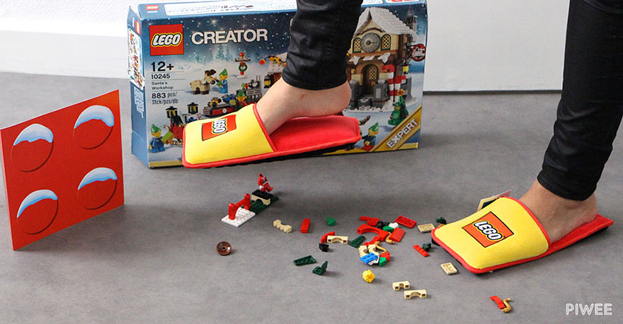
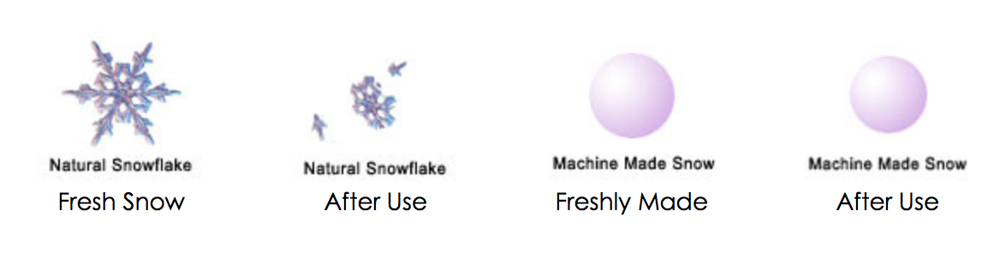
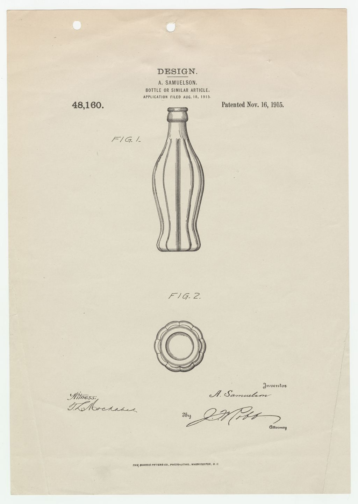

The Collection
Weekly digest of the best things on the internet
Edition Five
Sunday 22 Nov 2015
Sign up to receive The Collection in your inbox every Sunday
Weekly Wrap Up
I’d say the biggest story in my little sliver of Australia this week was Sydney’s heatwave. Clocking in at over 42ºC on Friday afternoon, and it’s not even summer yet! Rather awesomely, at around 4PM on Friday, if you were in Australia you can safely say that you were in the hottest place on Earth.

In the US, politicians are using the recent tragedies in Europe to push their anti-immigration agendas. If you haven’t seen much about it, the simple fact is despite many states trying to implement religious based immigration policies, immigration is a strictly federal issue. So these sites can make their grand claims, but unless federal congress passes a new law they’ll be little change.
On that point, a Texas republican decided it’s time we shut down the internet if we’re to stop the bad guys. Let's turn off all electricity too, the terrorists won't be able to see us in the dark.
 Speaking of annoying pains, Lego have released branded slippers to prevent Christmas morning pain. They’ll be a limited run of 1,500 distributed at random. So expect these to be up on Ebay by the afternoon with exorbitant markups.
It's formal season, and Lane Sainty for Buzzfeed Australia wrote a great piece about what happens at a formal for lgbt teens.
Lastly, The New York Times had the best correction of possibly ever this week in their review of Adele’s 25. I’ve saved the correction as an image below so you don’t have to use one of your NYT free articles on it. If you’re curious as to whether it’s a good album, let’s just say it sold out. “That puts 25 in the realm of 2.5 million copies—just over the record-setting 2.415 million copies NSYNC’s No Strings Attached sold back in March 2000, before the digital music revolution destroyed the foundation of physical sales.” Link.
{kind=link}
This is a shitty ad. Maybe it'll make me some money? Probably not because I assume you all run ad-blockers.
1 Twelve Years After 'The End of the World'
We all remember the crazy viral video explaining in poor cartoon form the process of the end of the world. One of the internet’s first viral videos. “But I am le tired,” a phrase still heard on occasion today. This is an interesting look at the life of someone accidentally internet famous, before internet famous was even a thing.
“If I had known it would get several million hits on YouTube, and that I could have monetized that, then maybe I would have put my name on it.”
12 Years Later, Here's What Happened to the Viral Mastermind Behind 'The End of the World'
by Mic on 17 November 2015.
8 min read
2 How Snowmaking Works
A cool look at the differences between real and man-made snow. Growing up skiing in Australia I'm all too accustomed to the need for snowmaking. I find it fascinating the way we can play nature and create enough snow for thousands of people to ski over every day.

How Snowmaking Works
by Roundtop Mountain Resort.
7 min read
3 The Problems With Food Delivery Services
A first hand account of the ups and downs of being a generic food delivery person. Anna Vignet outlines how at the end of the day the best service is determined by the courier. The couriers service is determined by company's systems and infrastructure. I think a similar approach can be taken to other "crowd source" businesses like Uber.
Your Pizza’s Cold? Blame Your Food App — Not Your Courier
by Anna Vignet for Backchannel on 13 November 2015.
6 min read
4 Five Years of Building Instagram
Mike Krieger, co-founder of Instagram with Kevin Systrom, writing about the last five years. Going from zero to everything:
October 5, 2010: 0 users 😬
October 6, 2010: 25,000 users😜
November 2010: 1 million users😅
2012: 30 million users😆
2013: 200 million users😵
Five Years of Building Instagram
by Mike Krieger for Backchannel on 7 October 2015.
8 min read
5 The Coke bottle’s iconic design happened by sheer chance
A look at the history of the Coca-Cola bottle. The original patent for the bottle excluded the Coca-Cola branding so that competitors didn't know which brand the bottle was for. Since its debut, over 300 billion glass Coke bottles have been sold worldwide.

The Coke bottle’s iconic design happened by sheer chance
by Anne Quito for Quartz on 17 November 2015.
3 min read
6 The Billionaires at Burning Man
Originally, the plan had been for employees to greet guests as they arrived and to acclimate the uninitiated to the unique environment of Burning Man. But with the staff scrambling to put the finishing touches on the accommodations, social engagement largely fell by the wayside. So, too, did the popsicle stand, which was never built. Many of the wealthy guests arrived on private planes, tired and ready to be pampered, only to find a harried, semi-professional staff struggling to meet their expectations.
Instead of a spirit of inclusiveness and harmony, Lillie says she found herself in an environment dedicated foremost to protecting the VIP status of its wealthy inhabitants.
The Billionaires at Burning Man
by Felix Gillette for Bloomberg on 6 February 2015.
14 min read
7 How Does In-Flight Wi-Fi Really Work?
With university break now upon us, there will be many flights in the coming weeks. Rick Mitacek has taken a look at how in-flight works on both over ground and over ocean flights. It's pretty crazy when you think about the fact that 200 people on a plane can be connected to the internet from 10,000m in the sky.
Though, I do still like to "disconnect" on flights. There's something nice about knowing for the next few hours it's just you and the rest of the plane, the world will be waiting for you when you land.
How Does In-Flight Wi-Fi Really Work?
by Rick Mitacek for The Points Guy on 18 November 2015.
8 min read
Sign up to receive The Collection in your inbox every Sunday
Articles Hand-Picked While Listening To: